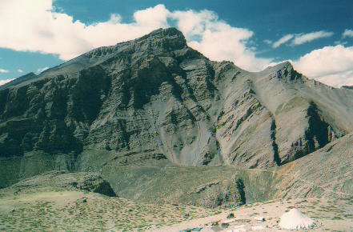
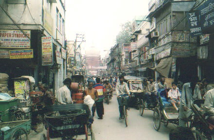

.
.
Day 18:
Outta here….
Yunam Tso
Up early and off to Jispa. Today will be a long run, 175 kms south over 2 mountain passes…… Lachulung La and Baralach La, or as Uwe always calls it....... Barala-la-la. The trip is fairly uneventful as we pass many familiar spots like our old campsite at Sarchu. We come into a tent village just north of Baralach La pass. It sits in a valley by a lake called Yunam Tso and has beautiful red mountains around it. There is an Indian army recovery truck towing the remains of a ten ton cargo truck. It had rolled down the mountain somewhere north of us and looked as flat as a pancake. Apparently only one person died, one escaped.
.
Here we meet up with Patrick from California, who is leading a Lotus tour group of British and American bikers north on the same route. They have Bullets also, but lack the large leather saddle bags Peter has installed. Gear is bungeed on the back. There is only one support jeep, so the cooking crew can not go on ahead to find camp like ours. One British rider told me about some cracked ribs he got in a fall farther south. His chest is wrapped up but he is soldiering on ok. They have ridden all the way from New Delhi which is a steep learning curve with high density traffic. I knew that Lotus charges about $ 5200 US for this trip ( price may be lower now ), and Peter’s Classic Bike Adventures only $ 2550. I suddenly realize how well prepared Peter is compared to some other operations. His equipment has been fine tuned over many years, and he has done his homework. Also, he is local, and avoids the extra commission of a US head office booking clients and taking a large cut. I am glad to be with Peter’s group regardless of the language challenge.
.
Gassing
up, we meet another group of 8 bikers heading north on Vespa scooters.
They have come from Dehradun and are sponsored by Castrol oils judging
by all the stickers on their gear. Their goal is Khardung La. We have a
good talk with them and enjoy their energetic enthusiasm.
We cross
Baralach La in good weather and relax by the river in Jispa tenting again.
Day 19:
Last ride….
 .
Family summer tent Pack horses
Richard hands out envelopes to all the camp crew, and we thank them for doing such a great job. They all seem very happy that we are satisfied tourers. It is another nice sunny day until we climb up into the fog and cloud on Rohtang La pass. Helmut follows me as he has done many times on the trip, maybe curious to see what I will photograph next. He does not carry a camera. I enjoy the company as we are often cruising along on our own. I stay far behind the group and stop many times to take photos.
Helmut climbing north side of Rhotang La
The long descent into the green Kullu Valley is such a stunning contrast to the rock and barren mountains north of us. When I notice Helmut is not behind me I turn back and find him at a small store beside a waterfall. We eat some chocolate bars and buy some drinks. Ashok and Raju soon catch up in the jeep.
. .
Coming down the south side of Rhotang La
Before I know it we are cruising along the Beas River through pine forests towards Nagar. When we get back to the Ragini Hotel I know it is the end of my two wheel trip. I feel very fortunate to have seen this remote area and have the company of such a great a crew and riding companions. I am very glad I came all this way. At night we have a big party on the roof and Martin gets out the guitar. Lots of beer is drunk, and for me……… red plum juice again.
Day
20:
Back at the ranch
Today is a recovery day, we relax around Nagar. Three of us climb up the hill to a very old temple. A friendly girl who lives there with her family shows us around. She tells us that it has been occupied for 4000 years…… the passage of time has a different meaning in Asia…………
.
Across the street from our hotel a truck dumps a load of hay. All day long the family carries it up the stairs to their house where it will feed the animals in their basement through the winter. On our last stay in Nagar, Peter’s friend the hotel owner invited us to his home for a traditional Kullu supper. We all sat on the floor at low folding tables which are ornately decorated. His wife fed us amazing vegetarian food, with very few spices. He tells us that in winter the animals are kept under the main floor which is really the 2nd story level . This provides heat for the people above !
.
Palace at Nagar
I visit the old Royal Palace next door to us, and take photos of the ornate woodwork. It is now a hotel and tourist attraction, and has been fully restored. I walk past the large plots of wild cannabis growing just below its walls, and head down the steep road to Nagar village where we have a restaurant meal under a huge parachute tent .
.
Cannabis is a native species
Day
21:
Landslide ?…. What landslide ?….
At 4pm we say goodbye to Nyima and Tensing. I leave my Shoei helmet with Tensing as a gift, glad to lighten my load. We walk down the road to our charter bus which is too large to turn around up here. Peter has booked one big enough for everyone to have four seats to sleep across, with 8 rows we are all set.
As we pull out of Nagar a new journey begins and it will not be a short one. There has been a lot of flooding here while we were gone. We pass the narrow suspension bridge we took the bikes over 2 weeks ago, it is now bare wires and the floor boards have been swept away. Normally it sits 15 feet above the water .
Two hours south we come to a long line of hundreds of vehicles. There has been a landslide earlier and all traffic has come to a halt. It is raining again so the outlook is not good. Peter tells the driver to turn around and find a stretch of road that is safer to park on, we will wait out the roadblock. The driver asks if he should start looking for a hotel for us. Peter laughs and says…… “ these guys have been sleeping on the ground for 2 weeks, this IS a hotel to them ”. The driver looks at us and agrees.
All night the rain beats down and the river roars past below us. Apart from the heavy snorers and the odd trip outside, it is an easy sleep. No traffic goes by. There is some water coming in my window frame but not enough to bother me. We all are stretched out across the aisle, so a trip outside to the bathroom is an obstacle course of horizontal legs at crotch height. It feels like crossing rows of fallen tree trunks that are a touch too high.
Stone temple - Nagar
In the morning we head south and park at the back of the traffic jam. We
walk up the line a kilometer to view the slide. Mud and large rocks cover
the road, you can see more rocks rolling down the hill every so often.
It is very unstable until the rain stops. The odd rock bounces down the
mountain and into the river.
I am
out of film so I cannot get any more photos. Back at the bus we weigh our
options. Tomorrow night Henning, Helmut, Richard and Uwe must be on the
plane to Vienna. I am more relaxed , I plan to see Delhi and
Agra so I have another four days.
Time to decide, the clock is ticking. Peter thinks the only option is to hand carry our gear around the slide. We have been told there is a second slide beyond this one a few kms, but we don’t know how far. We all agree, it is better than waiting another day in the bus, we will try to rent transport on the other side.
Now I really appreciate my decision to travel light as we drag our baggage down the road. We have only walked about 5 minutes when crowds of people are coming towards us waving everyone back. A bulldozer has come from the other side and we will be moving in the next few hours ……… good kharma again !
We get down to the next slide and wait a few hours for it to be cleared. As we drive along the valley you can see huge sections of the hills that have dropped into the river. The roads on the other side are cut off also.
The rest of the trip is not interrupted, we drive all night and get back
to Hotel 55 at 4 am. It has taken 36 hours to get to Delhi…….
twenty hours more than the bus trip north . Henning and I share a
room one more night, tomorrow I will move to a single.
Day 22:
Delhi tourists
Today Peter has arranged some touring in Delhi and a farewell supper at a restaurant. We go to old Delhi in auto rickshaws and visit Jama Masjid , (Friday Mosque) one of the largest in India. It was built in the 1640’s and was the final architectural extravagance of Mughal emperor Shah Jahan. There is a huge courtyard that can hold 25,000 worshippers. We are now barefoot and the hot stones are conveniently covered by long narrow canvas sheets.
.
Next we cruise the bazaar in old Delhi and pick up more souvenirs. Then we decide to see the Red Fort. It is very hot and the taxi drivers have their own agenda, they end up back near the hotel after chasing each other for blocks. Peter gives up on the taxis, tells them what he thinks of their games, and pays them off. By now we are all ready for a drink.
. 
After relaxing in the hotel, we walk down towards Connaught Circle, the centre of town. We go upstairs to the Rodeo bar and restaurant at 12-A Connaught Place. This is the funniest and most entertaining place I have eaten in yet. It is suppertime and the place is hopping. All the waiters are dressed in western gear, cowboy hats, and even toy six shooters in leather holsters….. this is quite a sight for New Delhi ! There are families having birthdays, guys drinking beer and eating steaks, and people like us having a party. All ages are there from 3 yrs and up. Over in one corner is a big sound booth, and behind the glass window is a DJ who doesn’t only spin music. He has a microphone stand and behind him is ……. a guitar player ! This guy can sing, and does a huge variety of rock and roll, pop, you name it. He is so good that sometimes I think I am listening to a tape instead until I look up to see him singing. It all seems surreal behind glass in a restaurant. One thing I learned in Delhi is that the food is fantastic and people have fun. From the high Himalayas to the lower plains India knows how to cook and rock !
We head home and I say goodbye to the rest of the gang, they will be in
the air by midnight. Peter will hop on a regular bus back to Manali, another
14 hour ride.
| ------- To India part 6 --------- |